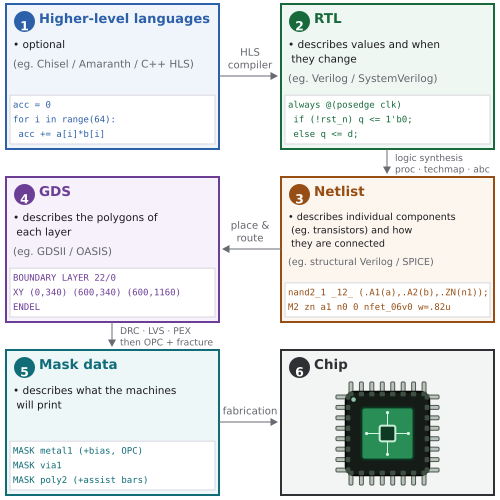
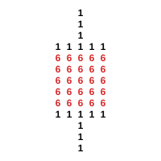
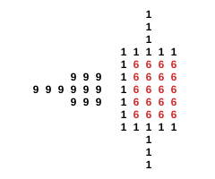
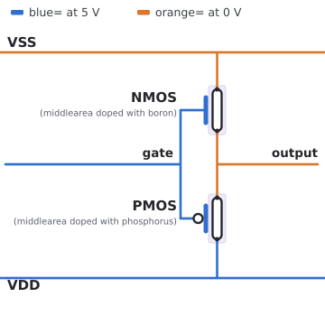
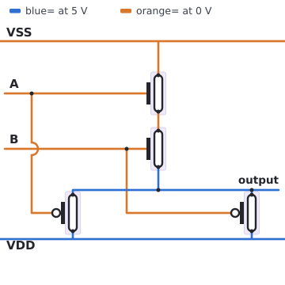

Ba chế độ đọc: dùng 3 nút tròn ở góc dưới bên phải để chuyển nhanh (trên điện thoại, ba nút nằm thành một thanh ở cuối màn hình để không đè chữ bên phải). VI — bản dịch tiếng Việt đầy đủ, theo từng đoạn. EN — nguyên văn tiếng Anh, không tách cụm. Cụm (mặc định, biểu tượng A gạch dưới) — tiếng Anh tách thành các cụm theo mệnh đề; rê chuột hoặc chạm vào một cụm để xem nghĩa tiếng Việt. Chạm lần nữa hoặc chạm ra ngoài để đóng; với cụm chứa liên kết, trên điện thoại chạm lần đầu để xem nghĩa, chạm lần hai để mở liên kết. Chế độ được ghi nhớ trên máy này; có thể mở thẳng bằng ?mode=vi, ?mode=en hoặc ?mode=chunk. Ở chế độ Cụm, ô “Gạch chân nhẹ các cụm” vẫn dùng được. Thuật ngữ như ASIC, PDK, GDS… giữ tiếng Anh kèm giải nghĩa ngắn. Bản dịch do người viết làm theo ngữ cảnh, có thể còn chỗ chưa tối ưu. Văn bản và hình do Vitalik tự làm được tác giả phát hành tự do theo giấy phép WTFPL (theo README kho vbuterin/blog), nên được đăng lại đầy đủ ở đây với ghi công. Các hình không phải của tác giả (ảnh chụp bài đăng X, ảnh của bunnie) không được sao chép; mình để liên kết tới nguồn. 13 sơ đồ còn lại là các hình SVG nhúng trong bài gốc (dùng chung cho cả ba chế độ). Mindmap cuối bài do người viết tóm tắt, không phải của tác giả.
TL;DR
- Bài này có ba chế độ đọc, chuyển bằng 3 nút nổi góc dưới bên phải (trên điện thoại: thanh 3 nút ở cuối màn hình): bản dịch tiếng Việt đầy đủ (VI), nguyên văn tiếng Anh (EN), và tiếng Anh tách cụm để rê chuột/chạm xem nghĩa (Cụm, mặc định).
- Vitalik dẫn người đọc quen “thuần phần mềm” đi xuống tận tầng phần cứng: viết một mạch nhân 3 (8 bit) bằng Verilog, rồi theo công cụ mã nguồn mở (Yosys, OpenROAD) đi qua netlist → DEF → GDS, với PDK của từng nhà máy (fab). Càng xuống thấp, phần mềm càng phải biết nhiều về quy trình của fab.
- Phần vật lý: pha tạp silicon bằng boron/phosphorus, transistor (cực cổng, nguồn, máng), inverter (NOT), NAND, bộ nhớ làm từ hai inverter, đồng hồ từ một số lẻ inverter nối vòng. Khác với mạch số học trong ZK/FHE, mạch vật lý có chiều thời gian và có thể lặp vòng.
- Về “mã nguồn mở” trong phần cứng: các fab đang công khai PDK (GF180, SKY130, IHP 130 nm, và ICS55 mới một phần); mức khả thi thực tế được xem là khoảng 25 nm. Để kiểm chứng chip cần mở tới tầng GDS, không chỉ Verilog; các kỹ thuật kiểm tra như IRIS cần đi kèm thiết kế dễ kiểm tra. Kết luận: “not your silicon, not your keys”, và hy vọng ngành tách thành phần cứng hiệu năng và phần cứng bảo mật.
Lặn nông vào thiết kế chip mã nguồn mở
A shallow dive into open-source chip design
A shallow dive into open-source chip design
Đặc biệt cảm ơn Matt Venn vì đã góp ý và rà soát
Special thanks to Matt Venn for feedback and review
Special thanks to Matt Venn for feedback and review
Nếu bạn muốn hiểu thật đầy đủ, tối ưu hoặc kiểm chứng điều đang diễn ra trong bất kỳ loại máy tính nào, thì rốt cuộc bạn phải đi xuống tận tầng phần cứng: transistor (linh kiện bán dẫn), silicon (silic) và electron (điện tử). Trình biên dịch, trình thông dịch và hệ điều hành làm nhiệm vụ lấy một ứng dụng được viết bằng ngôn ngữ lập trình cấp cao, rồi chuyển nó thành mã máy (machine code) ở tầng nền để bảo cho máy phải làm gì. Bản thân con chip máy tính thực thi mã máy đó, và chạy nó trên ngôn ngữ nền của vũ trụ: hóa học và vật lý.
If you want to fully understand, optimize or verify what's going on in any kind of computer, ultimately you have to go down to the level of the hardware: transistors, silicon and electrons. Compilers, interpreters and operating systems do the job of taking an application expressed in a high-level programming language, and converting it into base-layer machine code that tells the machine what to do. The computer chip itself executes that machine code, and runs it on the base-layer language of the universe: chemistry and physics.
If you want to fully understand, optimize or verify what's going on in any kind of computer, ultimately you have to go down to the level of the hardware: transistors, silicon and electrons. Compilers, interpreters and operating systems do the job of taking an application expressed in a high-level programming language, and converting it into base-layer machine code that tells the machine what to do. The computer chip itself executes that machine code, and runs it on the base-layer language of the universe: chemistry and physics.
Mục tiêu của bài viết này là giới thiệu sơ lược về ngăn xếp (stack) này, nhắm tới người đọc quen với góc nhìn "thuần phần mềm" hơn về thế giới máy tính. Cụ thể, tôi sẽ:
The goal of this post will be to give an introduction to this stack, targeting a reader who is used to a more "pure-software" view of the computing world. Specifically, I will:
The goal of this post will be to give an introduction to this stack, targeting a reader who is used to a more "pure-software" view of the computing world. Specifically, I will:
- Giải thích ngăn xếp phần mềm của các ngôn ngữ dùng để thiết kế chipExplain the software stack of the languages used to design chipsExplain the software stack of the languages used to design chips
- Giải thích phần hóa học cơ bản giúp transistor, cổng logic (gate) và mạch hoạt độngExplain the basic chemistry that makes transistors, gates and circuits workExplain the basic chemistry that makes transistors, gates and circuits work
- Giả định bạn đã hiểu cách các chương trình phức tạp có thể được biến thành mạch thông qua các cổng logic (tôi đã trình bày điều này một cách ngầm định trong tất cả các bài về mật mã học) - tôi sẽ coi như hoàn thành nhiệm vụ khi dừng ở một cổng NAND đơn lẻ và giả định bạn biết cách đi xa hơnAssume you already understand how complex programs can be turned into circuits through logic gates (I cover this implicitly across all the various cryptography posts) - I'll declare victory at a single NAND gate and assume you know how to go furtherAssume you already understand how complex programs can be turned into circuits through logic gates (I cover this implicitly across all the various cryptography posts) - I'll declare victory at a single NAND gate and assume you know how to go further
- Tập trung vào những khác biệt giữa các mô hình toán học thông thường của mạch số học (arithmetic) và mạch boolean, với mạch silicon vật lýFocus on differences between the typical mathematical models of arithmetic and boolean circuits, and physical silicon circuitsFocus on differences between the typical mathematical models of arithmetic and boolean circuits, and physical silicon circuits
- Bàn về "mã nguồn mở" thực tế nghĩa là gì trong bối cảnh phần cứng - ranh giới hiện nay nằm ở đâu, và có thể cải thiện ở đâuTalk about what "open-source" practically means in a hardware context - where the frontier is, and where it can improveTalk about what "open-source" practically means in a hardware context - where the frontier is, and where it can improve
Ngăn xếp ngôn ngữ phần cứng
The hardware language stack
The hardware language stack

Cũng giống như có những ngôn ngữ cấp cao để viết phần mềm, cũng có những ngôn ngữ cấp cao để viết phần cứng. Con người (hoặc bot) viết mã bằng các ngôn ngữ cấp cao nhất, và mã này sau đó được biên dịch xuống các ngôn ngữ cấp thấp dần, càng xuống thấp thì càng cụ thể. Trong phần mềm, các tầng thấp nhất phụ thuộc vào máy tính: bạn biên dịch cho một kiến trúc cụ thể. Trong phần cứng, các tầng thấp nhất (và ở mức độ nào đó cả các tầng giữa) phụ thuộc vào fab (nhà máy chế tạo chip) và quy trình chế tạo: bạn đưa ra chỉ dẫn được thiết kế cho một cơ sở cụ thể vận hành một quy trình chế tạo cụ thể để làm ra con chip.
Much like there are high-level languages for writing software, there are high-level languages for writing hardware. People (or bots) write code in the highest-level languages, and this code then gets compiled into progressively lower-level languages, where the lower you go the more specific you get. In software, the lowest levels are computer-dependent: you compile for a particular architecture. In hardware, the lowest levels (and to some degree even mid-levels) are fab and process-dependent: you give instructions designed for a particular facility running a particular fabrication process to build the chip with.
Much like there are high-level languages for writing software, there are high-level languages for writing hardware. People (or bots) write code in the highest-level languages, and this code then gets compiled into progressively lower-level languages, where the lower you go the more specific you get. In software, the lowest levels are computer-dependent: you compile for a particular architecture. In hardware, the lowest levels (and to some degree even mid-levels) are fab and process-dependent: you give instructions designed for a particular facility running a particular fabrication process to build the chip with.
Hãy cùng đi qua một ví dụ. Ta sẽ có một mạch chỉ đơn giản giữ một giá trị x, và mỗi lượt nó nhân x ← x * 3, bỏ đi mọi bit cao (chỉ giữ 8 bit). Đây là một món đồ chơi đơn giản, nhưng đủ để cho thấy nhiều đặc điểm quan trọng của thiết kế chip: mạch, thứ tương đương trong ngôn ngữ mô tả phần cứng (HDL) của mảng, định thời (timing) và bộ nhớ.
Let's walk through an example. We're going to have a circuit which simply holds a value x, and every turn it multiplies x ← x * 3, throwing away any high-order bits (keeping only 8 bits). It's a simple toy, but it's enough to show many of the important features of chip design: circuits, the hardware description language equivalent of arrays, timing and memory.
Let's walk through an example. We're going to have a circuit which simply holds a value x, and every turn it multiplies x ← x * 3, throwing away any high-order bits (keeping only 8 bits). It's a simple toy, but it's enough to show many of the important features of chip design: circuits, the hardware description language equivalent of arrays, timing and memory.
Đây là mã Verilog (ngôn ngữ mô tả phần cứng) cho nó:
Here's the Verilog for it:
Here's the Verilog for it:
`default_nettype none
module tt_um_mul3_seq (
input wire [7:0] ui_in, // Dedicated inputs (unused)
output wire [7:0] uo_out, // Dedicated outputs: current state
input wire [7:0] uio_in, // IOs: Input path (unused)
output wire [7:0] uio_out, // IOs: Output path
output wire [7:0] uio_oe, // IOs: Enable path (active high: 0=input, 1=output)
input wire ena, // always 1 when the design is powered
input wire clk, // clock
input wire rst_n // reset_n - low to reset
);
reg [7:0] state;
always @(posedge clk) begin
if (!rst_n)
state <= 8'd1; // starting point: 1, as an 8-bit number
else
state <= state + (state << 1); // multiply by 3
end
assign uo_out = state; // registered output: changes only on clock edges
assign uio_out = 0;
assign uio_oe = 0;
// List all unused inputs to prevent warnings.
wire _unused = &{ena, ui_in, uio_in, 1'b0};
endmodulePhần đầu khai báo cấu trúc của đầu vào và đầu ra. Các giá trị ta tính toán là số nguyên 8 bit, nên hầu hết các dây (wire) được khai báo trực tiếp thành bó 8 dây. "Phần thịt" chính của mã chỉ là các dòng 16-21: always @(posedge clk) (nghĩa là "logic bên dưới được kích hoạt khi clk chuyển từ 0 lên 1"), nếu đang reset, đặt trạng thái (state) bằng 1; nếu không thì nhân trạng thái với 3. state << 1 dịch từng bit sang trái 1 vị trí; dịch trái 1 rồi cộng là cách tiết kiệm nhất cho tới nay để nhân với 3.
The beginning declares the structure of the input and output. The values we are computing over are 8-bit integers, and so most of the wires are directly declared as packs of 8. The main "meat" of the code is just lines 16-21: always @(posedge clk) (meaning "the logic below activates when the clk shifts from 0 to 1"), if we're resetting, set the state to 1; otherwise multiply the state by 3. state << 1 shifts each bit leftward by 1; left-shift by 1 and then add is by far the most economical way to multiply by 3.
The beginning declares the structure of the input and output. The values we are computing over are 8-bit integers, and so most of the wires are directly declared as packs of 8. The main "meat" of the code is just lines 16-21: always @(posedge clk) (meaning "the logic below activates when the clk shifts from 0 to 1"), if we're resetting, set the state to 1; otherwise multiply the state by 3. state << 1 shifts each bit leftward by 1; left-shift by 1 and then add is by far the most economical way to multiply by 3.
Ở tầng Verilog, thế là hết!
At the Verilog level, that's it!
At the Verilog level, that's it!
Nếu bạn muốn thêm đầu vào và đầu ra (ví dụ bàn phím hay màn hình), thì chúng nằm ngoài con chip - dù bạn sẽ cần thêm logic phụ để giao tiếp với đầu vào hoặc đầu ra cho đúng. Nếu bạn muốn tính Keccak-256 (hàm băm) trong một vòng lặp thay vì nhân với 3, thì đó "chỉ là" một tập bước phức tạp hơn mà bạn có thể nhét vào phần always @(posedge clk). Nếu bạn hiểu những điều trên, bạn đã hiểu mọi thứ cần thiết để thiết kế một ASIC (chip chuyên dụng) leanSeal!
If you want to add inputs and outputs (eg. a keyboard or a display), that's outside the chip - though you would need to add extra logic to talk to the input or output correctly. If you want to compute Keccak-256 in a loop instead of multiplying by 3, that's "just" a more complicated set of steps that you can shove into the always @(posedge clk) section. If you understand the above, you already understand everything you need to design a leanSeal ASIC!
If you want to add inputs and outputs (eg. a keyboard or a display), that's outside the chip - though you would need to add extra logic to talk to the input or output correctly. If you want to compute Keccak-256 in a loop instead of multiplying by 3, that's "just" a more complicated set of steps that you can shove into the always @(posedge clk) section. If you understand the above, you already understand everything you need to design a leanSeal ASIC!
Giờ, hãy thử dựng cái này thành một con chip. Để làm vậy, ta sẽ dùng Yosys và OpenROAD (bộ công cụ tổng hợp và bố trí mạch mã nguồn mở). Đây là kết quả của giai đoạn trung gian, chuyển Verilog đó thành netlist (danh sách linh kiện và kết nối). Tôi sẽ cho xem một đoạn nhỏ của mã:
Now, let's try to build this into a chip. For this, we'll use Yosys and OpenROAD. Here's the result of the intermediate stage, converting that Verilog into a netlist. I'll show one small fragment of the code:
Now, let's try to build this into a chip. For this, we'll use Yosys and OpenROAD. Here's the result of the intermediate stage, converting that Verilog into a netlist. I'll show one small fragment of the code:
...
wire _23_;
wire _24_;
gf180mcu_fd_sc_mcu7t5v0__clkinv_1 _25_ (
.I(rst_n),
.ZN(_06_)
);
gf180mcu_fd_sc_mcu7t5v0__clkinv_1 _26_ (
.I(uo_out[3]),
.ZN(_07_)
);
gf180mcu_fd_sc_mcu7t5v0__oai21_1 _27_ (
.A1(uo_out[1]),
.A2(uo_out[4]),
.B(uo_out[3]),
.ZN(_14_)
);
gf180mcu_fd_sc_mcu7t5v0__oai21_1 _28_ (
.A1(_13_),
.A2(_14_),
.B(_12_),
.ZN(_15_)
);
...Hãy chú ý vài điều ở đây:
Notice a few things here:
Notice a few things here:
- Ngôn ngữ netlist rất đơn giản: nó chỉ gồm các linh kiện và các kết nối của chúng. Linh kiện được khai báo bằng tên, ví dụ
oai21là viết tắt của "OR-AND-INVERT" (HOẶC-VÀ-ĐẢO):ZN = not((A1 or A2) and B)Kết nối được tạo bằng cách đặt cho hai hay nhiều cổng (port) cùng một tên, ví dụ trong mã trên, bạn thấy.ZN(_14_)ở OAI thứ nhất, và.A2(_14_)ở OAI thứ hai. Điều này nghĩa là đầu ra của OAI thứ nhất trở thành một trong các đầu vào của phép OR ở OAI thứ hai, và có một sợi dây nối từ cái này sang cái kia. Và những gì tôi cho xem ở trên chỉ là một đoạn trích; trên toàn con chip, dây_14_còn nối với nhiều thứ khác, không chỉ hai cái đó. Thực ra, netlist ở trên vẫn là Verilog hợp lệ! Verilog rất linh hoạt ở khả năng viết ở mức thấp hay mức cao tùy nhà phát triển muốn.The netlist language is simple: it's just components and their connections. Components are declared by their name, eg.oai21stands for "OR-AND-INVERT":ZN = not((A1 or A2) and B)Connections are made by giving two or more ports the same name, eg. in the above code, you can see.ZN(_14_)in the first OAI, and.A2(_14_)in the second. This means that the output of the first OAI becomes one of the OR'd inputs in the second OAI, and there is a wire from one to the other. And what I showed above was a snippet; across the whole chip, the_14_wire connects to more things, not just those two. In fact, the above netlist is still valid Verilog! Verilog is very flexible in this ability to be low-level or high-level as the developer wishes.The netlist language is simple: it's just components and their connections. Components are declared by their name, eg.oai21stands for "OR-AND-INVERT":ZN = not((A1 or A2) and B)Connections are made by giving two or more ports the same name, eg. in the above code, you can see.ZN(_14_)in the first OAI, and.A2(_14_)in the second. This means that the output of the first OAI becomes one of the OR'd inputs in the second OAI, and there is a wire from one to the other. And what I showed above was a snippet; across the whole chip, the_14_wire connects to more things, not just those two. In fact, the above netlist is still valid Verilog! Verilog is very flexible in this ability to be low-level or high-level as the developer wishes. - Netlist đã ít nhiều mang tính đặc thù của foundry (xưởng đúc chip), trên thực tế.
gf180mcu_fd_sc_mcu7t5v0__oai21_1là một loại cell (ô logic cơ bản) được mô tả trong thư viện standard-cell (ô chuẩn) được tối ưu cho một foundry cụ thể. Về lý thuyết, bất kỳ netlist hợp lý nào cũng có thể được chuyển thành thiết kế có thể sản xuất tại bất kỳ foundry nào, nhưng trên thực tế, các quy trình sản xuất khác nhau khiến các linh kiện có chi phí khác nhau về diện tích, tốc độ và công suất, và vì vậy các netlist khác nhau là tối ưu ở các quy trình khác nhau. Netlist ở trên đang được dựng cho nhà máy GlobalFoundries ở Singapore, nơi dùng quy trình GF180.The netlist is already at least a little bit foundry-specific, in practice.gf180mcu_fd_sc_mcu7t5v0__oai21_1is a type of cell that is described in a standard-cell library that is optimized for a particular foundry. Theoretically, any reasonable netlist can be turned into a design that can be produced by any foundry, but in practice, different manufacturing processes lead to different components having different costs in area, speed and power, and so different netlists are optimal in different processes. The above netlist is being built for the GlobalFoundries fab in Singapore, which is using the GF180 process.The netlist is already at least a little bit foundry-specific, in practice.gf180mcu_fd_sc_mcu7t5v0__oai21_1is a type of cell that is described in a standard-cell library that is optimized for a particular foundry. Theoretically, any reasonable netlist can be turned into a design that can be produced by any foundry, but in practice, different manufacturing processes lead to different components having different costs in area, speed and power, and so different netlists are optimal in different processes. The above netlist is being built for the GlobalFoundries fab in Singapore, which is using the GF180 process.
Bước tiếp theo trong quá trình biên dịch là GDS ("Graphic Design System" - định dạng mô tả hình học chip để gửi nhà máy). Trước khi đi hết đường tới GDS, trước hết ta đến DEF (Design Exchange Format), một định dạng trung gian nữa vẫn còn nhiều phần ở mức cao, nhưng đã rất cụ thể về hình học.
The next step in the compilation is the GDS ("Graphic Design System"). Before we get all the way to the GDS, we first get to DEF, yet another intermediate format that still has many high-level parts, but already gets very specific about geometry.
The next step in the compilation is the GDS ("Graphic Design System"). Before we get all the way to the GDS, we first get to DEF, yet another intermediate format that still has many high-level parts, but already gets very specific about geometry.
Đây là phần của DEF tương ứng chỉ với sợi dây được gắn nhãn _14_ trong netlist ở trên:
Here is the portion of the DEF that corresponds to just the wire that's labeled _14_ in the netlist above:
Here is the portion of the DEF that corresponds to just the wire that's labeled _14_ in the netlist above:
- _14_ ( _42_ A2 ) ( _41_ A2 ) ( _28_ A2 ) ( _27_ ZN ) + USE SIGNAL
+ ROUTED Metal2 ( 50960 64400 ) ( * 65520 )
NEW Metal3 ( 50960 64400 ) ( 62160 * )
NEW Metal2 ( 62160 64400 ) ( * 80080 )
NEW Metal2 ( 62160 80080 ) ( 63280 * )
NEW Metal3 ( 42000 64400 ) ( 50960 * )
NEW Metal2 ( 40880 100240 ) ( 42000 * )
NEW Metal2 ( 40880 100240 ) ( * 104720 )
NEW Metal2 ( 42000 64400 ) ( * 100240 )
NEW Metal1 ( 50960 65520 ) Via1_VV
NEW Metal2 ( 50960 64400 ) Via2_VH
NEW Metal2 ( 62160 64400 ) Via2_VH
NEW Metal1 ( 63280 80080 ) Via1_VV
NEW Metal1 ( 42000 64400 ) Via1_VV
NEW Metal2 ( 42000 64400 ) Via2_VH
NEW Metal1 ( 40880 104720 ) Via1_VV
NEW Metal2 ( 42000 64400 ) RECT ( -280 -660 280 0 ) ;Đó là những tọa độ thật thể hiện một quỹ đạo thật của một sợi dây: bắt đầu từ (50960, 64400), rồi tới (62160, 64400), rồi tới (62160, 80080), và cứ thế. Đây là hình vẽ ra:
Those are actual coordinates showing an actual trajectory of a wire: starting from (50960, 64400), then to (62160, 64400), then to (62160, 80080), and so on. Here it is drawn out:
Those are actual coordinates showing an actual trajectory of a wire: starting from (50960, 64400), then to (62160, 64400), then to (62160, 80080), and so on. Here it is drawn out:

Lưu ý rằng:
Note that:
Note that:
- Độ rộng của các dây không được nêu trong DEF; nó được quy định ở nơi khác như một giá trị mặc định cho từng lớpThe widths of the wires are unspecified in the DEF; that's specified elsewhere as a per-layer defaultThe widths of the wires are unspecified in the DEF; that's specified elsewhere as a per-layer default
- Metal1, Metal2 và Metal3 là các lớp (layer) kim loạiMetal1, Metal2 and Metal3 are layersMetal1, Metal2 and Metal3 are layers
- Có một lớp ngầm định bằng vật liệu cách điện (SiO₂, silic đioxit) giữa các lớp kim loại liên tiếp. Một "via" (lỗ nối giữa các lớp) là một lỗ trên lớp đó được lấp đầy bằng kim loạiThere is an implied layer of an insulating material (SiO2) between consecutive metal layers. A "via" is a hole in that layer that is filled with metalThere is an implied layer of an insulating material (SiO2) between consecutive metal layers. A "via" is a hole in that layer that is filled with metal
Có một số tệp bổ sung quy định thứ tự các lớp, vật liệu nào mà các lớp phải được làm từ, v.v.
There are some extra files that specify the order of the layers, what materials the layers are supposed to be made out of, etc.
There are some extra files that specify the order of the layers, what materials the layers are supposed to be made out of, etc.
Thế này đã rất ở mức thấp: ta đang mô tả từng sợi dây và từng cổng ở mức hình học của chúng. Nhưng vẫn còn những tầng thấp hơn mà ta có thể đi xuống. Hãy xem GDS thật. Lần này, ta sẽ tập trung vào OAI mà netlist gắn nhãn "_27_". Đây là hai phần của GDS có ý nghĩa:
This is already very low-level: we're describing the individual wires and gates at the level of their geometry. But there are further levels down that we can go. Let's look at the actual GDS. This time, we'll focus on the OAI that the netlist labels "_27_". Here are the two parts of the GDS that matter:
This is already very low-level: we're describing the individual wires and gates at the level of their geometry. But there are further levels down that we can go. Let's look at the actual GDS. This time, we'll focus on the OAI that the netlist labels "_27_". Here are the two parts of the GDS that matter:


Cái đầu tiên là một bản ghi 88 byte nói rằng "đặt một thứ loại này ở chỗ này". Cái thứ hai là định nghĩa thực sự của thứ đó, chi tiết tới mức liệt kê mọi đa giác. Đây là mô tả con chip ở mức gần như thấp nhất mà bạn có thể có: hình học thực tế của từng linh kiện riêng lẻ. Không chỉ là "transistor ở đây", mà là "lớp Metal1 có một hình chữ nhật từ (705, 550) tới (1000, 2230)". Có một vài chi tiết nằm ngoài bản thân GDS (đáng chú ý nhất: mỗi lớp được làm từ vật liệu nào và dùng mức doping (pha tạp) nào), nhưng GDS tiến rất sát tới mức đầy đủ.
The first is an 88-byte record that says "put a thing of this type over here". The second is the actual definition of that thing, right down to listing all the polygons. This is a description of the chip at almost the lowest level you can get: the actual geometry of each individual component. Not just "transistor here", but "layer Metal1 gets a rectangle from (705, 550) to (1000, 2230)". There are some details that are outside the GDS proper (most notably: which material each layer is made out of and which doping levels are used), but the GDS comes remarkably close to being comprehensive.
The first is an 88-byte record that says "put a thing of this type over here". The second is the actual definition of that thing, right down to listing all the polygons. This is a description of the chip at almost the lowest level you can get: the actual geometry of each individual component. Not just "transistor here", but "layer Metal1 gets a rectangle from (705, 550) to (1000, 2230)". There are some details that are outside the GDS proper (most notably: which material each layer is made out of and which doping levels are used), but the GDS comes remarkably close to being comprehensive.
Để tạo ra và kiểm tra điều này, ta dùng một gói do foundry cung cấp gọi là process design kit (PDK - bộ công cụ thiết kế theo quy trình), cùng với các thư viện phần mềm cấp cao hơn (do foundry hoặc bên thứ ba cung cấp) được thiết kế xoay quanh PDK. Gói này gắn với từng quy trình, và nó chứa đủ loại thông tin về cách thiết kế chip cho nhà máy đó. Ví dụ, PDK chứa các quy tắc cho bước DRC ("design rule checking" - kiểm tra quy tắc thiết kế), bước xác minh rằng khoảng cách giữa mọi linh kiện là đủ và mọi quy tắc hình học khác riêng cho quy trình của foundry đó đều được tuân thủ.
In order to generate and validate this, we use a package provided by the foundry called the process design kit (PDK), along with higher-level software libraries (provided either by the foundry or by third parties) designed around the PDK. This is process-specific, and it includes all kinds of information about how to design chips for the given fab. For example, the PDK includes the rules for a DRC ("design rule checking") step, which verifies that distances between all the components are sufficient and that any other geometry rules specific to that foundry's process are obeyed.
In order to generate and validate this, we use a package provided by the foundry called the process design kit (PDK), along with higher-level software libraries (provided either by the foundry or by third parties) designed around the PDK. This is process-specific, and it includes all kinds of information about how to design chips for the given fab. For example, the PDK includes the rules for a DRC ("design rule checking") step, which verifies that distances between all the components are sufficient and that any other geometry rules specific to that foundry's process are obeyed.
Về cơ bản, ngay khi bạn đi xuống tầng thấp hơn Verilog, phần mềm thiết kế chip phải biết ít nhất vài điều về quy trình mà nhà máy đang dùng, và càng đi xuống sâu, càng lớn (và càng ít tùy chọn) danh sách những điều ấy.
Basically, as soon as you go lower-level than Verilog, the chip design software has to know at least some things about the process that the fab is using, and the further down you go, the larger (and less optional) that list of things gets.
Basically, as soon as you go lower-level than Verilog, the chip design software has to know at least some things about the process that the fab is using, and the further down you go, the larger (and less optional) that list of things gets.
Cuối cùng, khi bạn gửi cho nhà máy bản thiết kế cuối cùng, bản thân nhà máy sẽ điều chỉnh hình học. Hai điều chỉnh lớn là (i) hiệu chỉnh mép của các hình và thêm các chi tiết rất nhỏ ở các góc để chúng được in ra đúng như đã vẽ, và (ii) thêm vật liệu dummy fill (lớp đệm giả). Về nguyên tắc, nếu có đủ thông tin cần thiết, với tư cách nhà thiết kế chip bạn có thể tự làm việc này (và có thể nói là tốt hơn cho khả năng kiểm tra chip nếu bạn làm). Trên thực tế, dummy fill có thể được thêm bằng các quy trình mã nguồn mở, nhưng chi tiết về lithography (quang khắc) không công khai nên các hiệu chỉnh hình học chỉ nhà máy làm được ngay cả với các quy trình mà ta coi là mã nguồn mở. Dẫu vậy, những hiệu chỉnh này đủ nhỏ để không can thiệp vào các phương pháp kiểm tra mà tôi sẽ mô tả bên dưới.
Finally, once you send the fab your final design, the fab itself makes geometry adjustments. The two big ones are (i) nudging the edges of shapes and adding tiny features at corners so they print as drawn, and (ii) adding dummy fill material. In principle, if you have all the needed information, as a chip designer you could do this yourself (and it's arguably better for chip inspectability if you do). In practice, dummy fill can be added by open-source flows, but the lithography details are not public and so geometry corrections can only be done by the fab even with processes that we consider open-source. That said, these corrections are small enough that they do not interfere with the inspection methods I will describe below.
Finally, once you send the fab your final design, the fab itself makes geometry adjustments. The two big ones are (i) nudging the edges of shapes and adding tiny features at corners so they print as drawn, and (ii) adding dummy fill material. In principle, if you have all the needed information, as a chip designer you could do this yourself (and it's arguably better for chip inspectability if you do). In practice, dummy fill can be added by open-source flows, but the lithography details are not public and so geometry corrections can only be done by the fab even with processes that we consider open-source. That said, these corrections are small enough that they do not interfere with the inspection methods I will describe below.
Chế tạo con chip
Manufacturing the chip
Manufacturing the chip
Bước cuối cùng là sản xuất con chip. Về nguyên tắc, chỉ cần "gọi điện cho nhà máy, gửi họ file GDS và họ làm rồi gửi chip cho bạn qua đường bưu điện". Trên thực tế, nó cực kỳ đắt đỏ, phức tạp và tốn thời gian. Nếu bạn là nhà thiết kế chip quy mô nhỏ (hiểu là: bạn không có hàng triệu đô), cách tiết kiệm nhất để bắt đầu là qua các công ty multi-project wafer (MPW - gom nhiều dự án chung một tấm wafer). Các công ty này thu thập rất nhiều thiết kế chip từ khách hàng, và trả tiền cho một nhà máy để chạy một đợt sản xuất duy nhất làm ra tất cả các chip. Wafer.space là một ví dụ tốt về một công ty như vậy.
The last step is manufacturing the chip. In principle, it's "call up the fab, send them the GDS and they do it and send you the chips through the mail". In practice, it's very very expensive, complicated and time consuming. If you are a small-scale chip designer (read: you don't have millions of dollars), the most economical approach to get started is through multi-project wafer (MPW) companies. These companies collect a large number of chip designs from customers, and pay a fab to do a single production run that makes all the chips. Wafer.space is a good example of such a company.
The last step is manufacturing the chip. In principle, it's "call up the fab, send them the GDS and they do it and send you the chips through the mail". In practice, it's very very expensive, complicated and time consuming. If you are a small-scale chip designer (read: you don't have millions of dollars), the most economical approach to get started is through multi-project wafer (MPW) companies. These companies collect a large number of chip designs from customers, and pay a fab to do a single production run that makes all the chips. Wafer.space is a good example of such a company.
Nếu bạn còn nhỏ hơn thế nữa, và đặc biệt nếu bạn tham gia vào chip ở mức sở thích, một cách còn dễ hơn là đi qua chương trình Tiny Tapeout. Tiny Tapeout sản xuất một con chip duy nhất có hàng trăm mạch khác nhau trên đó, do hàng trăm người tham gia khác nhau cung cấp.
If you are even smaller than that, and especially if you're getting involved with chips at a hobbyist level, an even easier approach is to go through the Tiny Tapeout program. Tiny Tapeout produces a single chip that has hundreds of different circuits on it, supplied by hundreds of different participants.
If you are even smaller than that, and especially if you're getting involved with chips at a hobbyist level, an even easier approach is to go through the Tiny Tapeout program. Tiny Tapeout produces a single chip that has hundreds of different circuits on it, supplied by hundreds of different participants.
Các fab độc quyền và fab mở
Proprietary and open fabs
Proprietary and open fabs
Có lẽ điều bực bội nhất về thiết kế chip là mức độ kín đáo và độc quyền của toàn bộ lĩnh vực này. Nếu bạn làm việc với một nhà máy "tiên phong", bạn sẽ thấy rằng PDK và thậm chí cả phần mềm thiết kế chip cấp cao hơn đều độc quyền, phần mềm để làm việc với nhà máy và PDK đó cũng độc quyền và do các nhà cung cấp khác nhau làm ra, và bạn phải ký đủ loại thỏa thuận bảo mật (NDA) thì mới có thể tiếp cận toàn bộ ngăn xếp. Nhìn chung, phần cứng là một thế giới phản địa đàng độc quyền hoàn toàn, ở mức độ còn lớn hơn phần mềm cách đây 25 năm vào thời đỉnh cao của Microsoft Word và Internet Explorer.
Probably the most frustrating thing about chip design is how opaque and proprietary the whole thing is. If you work with a "frontier" fab, you will find that the PDK and even the higher-level chip design software are all proprietary, software to work with that fab and that PDK is also proprietary and made by different vendors, and you have to sign all kinds of non-disclosure agreements in order to be able to have any access to the whole stack. On the whole, hardware is a total proprietary dystopia, to an even greater degree than software was 25 years ago at the peak of the Microsoft Word and Internet Explorer days.
Probably the most frustrating thing about chip design is how opaque and proprietary the whole thing is. If you work with a "frontier" fab, you will find that the PDK and even the higher-level chip design software are all proprietary, software to work with that fab and that PDK is also proprietary and made by different vendors, and you have to sign all kinds of non-disclosure agreements in order to be able to have any access to the whole stack. On the whole, hardware is a total proprietary dystopia, to an even greater degree than software was 25 years ago at the peak of the Microsoft Word and Internet Explorer days.
Nếu bạn muốn làm chip mã nguồn mở, có những nhà máy thân thiện với điều này, nhưng bạn phải trả giá đắt về hiệu năng. Không nhà máy nào (hữu dụng trên thực tế) là mã nguồn mở hoàn toàn theo nghĩa có một bản thiết kế đầy đủ về cách dựng thêm một bản sao của cả nhà máy từ con số không. Nhưng thứ bạn có thể có là những nhà máy công khai PDK của họ, và có các ngăn xếp thiết kế chip mã nguồn mở hoàn toàn cho chúng, và không bắt bạn ký bất kỳ NDA nào, nhờ vậy bạn biết và được tự do công bố hình học chính xác (trong giới hạn vật lý) của các con chip bạn tạo ra.
If you want to make open-source chips, there are fabs that are friendly to this, but you pay a lot in performance. No (practically useful) fab is fully open-source in the sense that there's a full blueprint of how to build another copy of the entire fab from scratch. But what you can get is fabs that openly publish their PDKs, and for which there are fully open-source chip design stacks, and that don't make you sign any NDAs, so you know and are free to publish the exact (up to physical limits) geometry of the chips you create.
If you want to make open-source chips, there are fabs that are friendly to this, but you pay a lot in performance. No (practically useful) fab is fully open-source in the sense that there's a full blueprint of how to build another copy of the entire fab from scratch. But what you can get is fabs that openly publish their PDKs, and for which there are fully open-source chip design stacks, and that don't make you sign any NDAs, so you know and are free to publish the exact (up to physical limits) geometry of the chips you create.
Ba cái hàng đầu là:
The top three are:
The top three are:
- Nhà máy ở Singapore chạy quy trình GF180The Singapore fab running the GF180 processThe Singapore fab running the GF180 process
- Nhà máy SkyWater ở Minnesota chạy quy trình SKY130The SkyWater fab in Minnesota that runs the SKY130 processThe SkyWater fab in Minnesota that runs the SKY130 process
- IHP ở Frankfurt an der Oder (cũng ở mức 130 nm)IHP in Frankfurt an der Oder (also at the 130 level)IHP in Frankfurt an der Oder (also at the 130 level)
Gần đây, ICS55 của ICsprout, sản xuất tại một nhà máy ở Hàng Châu, đang mở dần, dù cho đến nay mới chỉ một phần: bản phát hành PDK chỉ là bản xem trước và không có một số phần mà PDK của các nhà máy khác cung cấp, và nó chỉ dùng được cho nghiên cứu và làm mẫu thử chứ không cho sản xuất hàng loạt thương mại.
Recently, ICsprout's ICS55, produced in a fab in Hangzhou, is opening up, though so far only partially: the PDK release is a preview and does not include some pieces that the other fab PDKs provide, and it's only available for research and prototyping and not commercial mass production.
Recently, ICsprout's ICS55, produced in a fab in Hangzhou, is opening up, though so far only partially: the PDK release is a preview and does not include some pieces that the other fab PDKs provide, and it's only available for research and prototyping and not commercial mass production.
Các con số 180, 130 và 55 ở đây về lý thuyết chỉ số nanomet, cụ thể là chiều dài cổng (gate length) tối thiểu của một transistor mà quy trình có thể sản xuất. Số nanomet càng thấp, thì càng nhiều năng lực tính toán mà chip có thể nhồi vào một không gian nhất định, và càng nhiều tính toán nó làm được trên mỗi watt. Trên thực tế, các con số tương ứng xấp xỉ với nanomet thật ở trên mức ~25nm, dù ngay cả ở đó mối liên hệ cũng lỏng lẻo. Dưới mức đó (ví dụ TSMC đang ở 2nm), các con số gần như chẳng còn nghĩa gì và thực chất trở thành từ khóa tiếp thị, thể hiện những cải thiện thực ra đến từ ví dụ việc xếp các thành phần chip hiệu quả hơn theo ba chiều.
The numbers 180, 130 and 55 here theoretically refer to nanometers, specifically the minimum gate length of a transistor that the process can produce. The lower the nanometers, the more compute the chip can pack into a particular space, and the more compute it can do per watt. In practice, the numbers approximately correspond to actual nanometers above the ~25nm level, though even there the connection is loose. Below that level (eg. TSMC is at 2nm), the numbers stop meaning much of anything at all and effectively become marketing buzzwords, representing gains that actually come from eg. more efficiently packing chip components in three dimensions.
The numbers 180, 130 and 55 here theoretically refer to nanometers, specifically the minimum gate length of a transistor that the process can produce. The lower the nanometers, the more compute the chip can pack into a particular space, and the more compute it can do per watt. In practice, the numbers approximately correspond to actual nanometers above the ~25nm level, though even there the connection is loose. Below that level (eg. TSMC is at 2nm), the numbers stop meaning much of anything at all and effectively become marketing buzzwords, representing gains that actually come from eg. more efficiently packing chip components in three dimensions.
Trên khoảng mức 50-100nm, nanomet thấp hơn nghĩa là hiệu quả không gian cao hơn và hiệu quả năng lượng cao hơn. Dưới mức đó, bạn đạt hiệu quả không gian dễ dàng hơn là hiệu quả năng lượng. Các tác vụ analog (tương tự) (làm việc trực tiếp trên giá trị liên tục, thay vì bit) cũng bị nhiễu nhanh hơn nhiều dưới các mức đó. Hơn nữa, chi phí tối thiểu cho một đợt sản xuất tăng nhanh khi số nanomet giảm.
Above around the 50-100nm level, lower nanometers means more space efficiency and more energy efficiency. Below that level, you get more space efficiency more easily than more energy efficiency. Analog workloads (working directly over continuous values, rather than bits) also get noisy much more quickly below those levels. Furthermore, the minimum cost of a fabrication run increases quickly as the nanometer levels decrease.
Above around the 50-100nm level, lower nanometers means more space efficiency and more energy efficiency. Below that level, you get more space efficiency more easily than more energy efficiency. Analog workloads (working directly over continuous values, rather than bits) also get noisy much more quickly below those levels. Furthermore, the minimum cost of a fabrication run increases quickly as the nanometer levels decrease.
Một "mục tiêu lý tưởng nhưng khả thi" cho các quy trình mở thường được coi chính là mức 25nm đó: chưa đủ tốt cho các tác vụ siêu nặng như AI tiên phong, nhưng tuyệt vời cho mọi thứ còn lại.
An "ideal realistically achievable target" for open processes is often considered to be exactly that 25nm level: not good enough for super-heavy workloads like frontier AI, but excellent for everything else.
An "ideal realistically achievable target" for open processes is often considered to be exactly that 25nm level: not good enough for super-heavy workloads like frontier AI, but excellent for everything else.
Transistor và cổng logic hoạt động thế nào?
How do transistors and gates work?
How do transistors and gates work?
Như ta vừa thấy, ngôn ngữ nền tận cùng của thiết kế chip là khoa học vật liệu và hình học, còn trình thông dịch của ngôn ngữ này là các định luật hóa học và vật lý. Đáng để hiểu những điều cơ bản, để bạn nhận ra một số khác biệt quan trọng giữa mạch vật lý thật và các sơ đồ cổng XOR, AND và NOT mà có thể bạn đã quen.
As we just saw, the ultimate bottom-level language of chip design is materials science and geometry, and the interpreter of this language is the laws of chemistry and physics. It is worth understanding the basics, so you can appreciate some important differences between real physical circuits and the diagrams of XOR, AND, and NOT gates that you might already be used to.
As we just saw, the ultimate bottom-level language of chip design is materials science and geometry, and the interpreter of this language is the laws of chemistry and physics. It is worth understanding the basics, so you can appreciate some important differences between real physical circuits and the diagrams of XOR, AND, and NOT gates that you might already be used to.
Trước hết, điều hiển nhiên. Có lẽ bạn còn nhớ điều này từ hồi cấp hai:
First, the obvious. You probably remember this from middle school:
First, the obvious. You probably remember this from middle school:
- Một số vật liệu là chất cách điện (insulator); các vật liệu khác là chất dẫn điện (conductor).Some materials are insulators; other materials are conductors.Some materials are insulators; other materials are conductors.
- Điện bao gồm các electron chảy qua chất dẫn điện.Electricity consists of electrons flowing through conductors.Electricity consists of electrons flowing through conductors.
- Electron chảy từ một đầu của pin, mà ta coi là có điện áp bằng không (ta gọi nó là VSS), sang đầu kia, có một điện áp nào đó, ví dụ 5V (ta gọi nó là VDD).Electrons flow from one end of a battery, which we consider as having zero voltage (we'll call it VSS), into the other end, which has some voltage, eg. 5V (we'll call it VDD).Electrons flow from one end of a battery, which we consider as having zero voltage (we'll call it VSS), into the other end, which has some voltage, eg. 5V (we'll call it VDD).
- Có một loại công tắc nào đó có thể mở hoặc đóng các phần khác nhau của mạch. Quá trình đó điều khiển điện đi đâu theo thời gian thực, và nhờ vậy khiến phép tính chạy.There are switches of some kind that can open or close different parts of the circuit. That process controls where electricity goes in real time, and thus makes the computation run.There are switches of some kind that can open or close different parts of the circuit. That process controls where electricity goes in real time, and thus makes the computation run.
Nhưng để hiểu thành phần then chốt khiến mạch hoạt động, tức transistor, ta phải đi xa hơn một chút. Cụ thể, ta cần làm rõ khái niệm "điện áp" và "điện trường".
But to understand the key component that makes circuits work, the transistor, we have to go a bit further. Particularly, we need to unpack the concepts of "voltage" and "electric fields".
But to understand the key component that makes circuits work, the transistor, we have to go a bit further. Particularly, we need to unpack the concepts of "voltage" and "electric fields".
Phép ẩn dụ dễ nhất cho điện áp là độ cao và trọng lực. Hãy tưởng tượng pin là một cái bơm xả nước ở độ cao 5 mét, và nhận nước ở độ cao 0 mét. Giữa đỉnh và đáy, có những ống để nước chảy xuống dọc theo.
The easiest metaphor for voltage is height and gravity. Imagine a battery as being a pump that releases water at a height of 5 meters, and accepts water at a height of 0 meters. Between the top and the bottom, there are tubes that water flows down along.
The easiest metaphor for voltage is height and gravity. Imagine a battery as being a pump that releases water at a height of 5 meters, and accepts water at a height of 0 meters. Between the top and the bottom, there are tubes that water flows down along.

Tại bất kỳ điểm nào, hướng của độ dốc là điện trường (field), còn độ cao là điện áp (voltage). Hễ có điện trường, thì dọc theo trường đó có một chênh lệch điện áp.
At any point, the direction of the slope is the field, and the height is the voltage. Whenever there is a field, across that field there is a voltage difference.
At any point, the direction of the slope is the field, and the height is the voltage. Whenever there is a field, across that field there is a voltage difference.
(Lưu ý rằng trong cả phần này, tôi viết dấu hơi cẩu thả để ưu tiên trực giác: thực tế, vì electron mang điện tích âm, chúng đi lên theo điện áp, không như nước, vốn chảy xuống theo độ cao)
(Note that in this whole section, I am being sloppy with signs to optimize for intuition: in reality, because electrons have negative charge, they go up voltages, unlike water, which goes down heights)
(Note that in this whole section, I am being sloppy with signs to optimize for intuition: in reality, because electrons have negative charge, they go up voltages, unlike water, which goes down heights)
Giờ ta đến bước ngoặt khiến điện và trọng lực khác nhau: electron không chỉ chịu tác động của điện trường (và do đó chênh lệch điện áp); chúng còn tạo ra điện trường (và do đó chênh lệch điện áp). Tất nhiên, mọi vật thể có khối lượng cũng tạo ra trường, nhưng bạn cần thứ gì đó lớn cỡ một tiểu hành tinh để tạo ra trường hấp dẫn mà bạn nhận thấy được (mặc dù...). Điện trường mạnh hơn trọng lực khoảng 10⁴⁰ lần tùy theo các hạt cụ thể liên quan, nên ta có thể tạo ra điện trường chỉ với vài electron, và do đó bật hoặc tắt chúng rất dễ dàng. Vì vậy để hiểu transistor hoạt động ra sao, bạn cần có một góc nhìn kép: electron không chỉ chịu tác động của "độ dốc" - chúng còn tạo ra "độ dốc".
Now, we get to the twist that makes electricity and gravity different: electrons aren't just acted on by fields (and hence voltage differences); they also create fields (and hence voltage differences). Of course, all gravitational bodies create fields too, but you need something as big as an asteroid to make a gravitational field that you can notice (although...). Electric fields are around 1040 times stronger than gravity depending on the specific particles involved, so we can produce electric fields with just a few electrons, and thus turn them on or off very easily. So to understand how transistors work, you will need to have a dual view: electrons are not just acted on by "slope" - they also create "slope".
Now, we get to the twist that makes electricity and gravity different: electrons aren't just acted on by fields (and hence voltage differences); they also create fields (and hence voltage differences). Of course, all gravitational bodies create fields too, but you need something as big as an asteroid to make a gravitational field that you can notice (although...). Electric fields are around 1040 times stronger than gravity depending on the specific particles involved, so we can produce electric fields with just a few electrons, and thus turn them on or off very easily. So to understand how transistors work, you will need to have a dual view: electrons are not just acted on by "slope" - they also create "slope".
Giờ, hãy xem một transistor. Có ba cực (terminal): cực cổng (gate), cực nguồn (source) và cực máng (drain).
Now, let's look at a transistor. There are three terminals: a gate, a source and a drain.
Now, let's look at a transistor. There are three terminals: a gate, a source and a drain.

(Một lần nữa, tôi vẽ hướng của các trường theo tác động của chúng lên electron, tức là ngược với hướng mà trường "về mặt kỹ thuật" có vì electron mang điện tích âm)
(Again, I'm drawing the direction of fields in terms of the effect they have on electrons, which is opposite the direction the field "technically" has because electrons have negative charge)
(Again, I'm drawing the direction of fields in terms of the effect they have on electrons, which is opposite the direction the field "technically" has because electrons have negative charge)
Cực nguồn và cực máng, cùng vùng nằm giữa, đều được làm từ silicon đã được doping (pha tạp) - tức là một phần nhỏ các nguyên tử silicon được thay thế bằng thứ khác.
The source and drain, and the area in between, are both made out of silicon that is doped - that is, a small portion of the silicon atoms are replaced by something else.
The source and drain, and the area in between, are both made out of silicon that is doped - that is, a small portion of the silicon atoms are replaced by something else.
Có hai cấu hình ở đây:
There are two configurations here:
There are two configurations here:
- Thay một ít silicon bằng boron (bo). Boron có 3 electron ở lớp vỏ ngoài cùng, nhưng lớp vỏ này "muốn" có 8. Cấu trúc tinh thể cho mỗi nguyên tử 4 nguyên tử lân cận (thực tế là 3D: nên là tứ diện, không phải vuông, nhưng vẫn là 4 lân cận), thêm 4 electron nữa thông qua liên kết cộng hóa trị. Do đó còn lại một chỗ trống. Điều này tạo ra một "lỗ trống" (hole), và lỗ trống đó có thể tự do nhảy giữa các nguyên tử boron và silicon.Replace some silicon with boron. Boron has 3 electrons in its outer shell, but the shell "wants" 8. The crystal structure gives each atom 4 neighbors (in reality it's 3D: so tetrahedral, not square, but still 4 neighbors), which adds another 4 electrons via covalent bonds. Hence there is one free slot left. This creates a "hole", and that hole can freely jump around between boron atoms and silicon atoms.Replace some silicon with boron. Boron has 3 electrons in its outer shell, but the shell "wants" 8. The crystal structure gives each atom 4 neighbors (in reality it's 3D: so tetrahedral, not square, but still 4 neighbors), which adds another 4 electrons via covalent bonds. Hence there is one free slot left. This creates a "hole", and that hole can freely jump around between boron atoms and silicon atoms.
- Thay một ít silicon bằng phosphorus (photpho). Phosphorus có 5 electron ở lớp vỏ ngoài cùng, và các liên kết cộng hóa trị với các nguyên tử silicon lân cận thêm 4. Lớp vỏ "muốn" có 8. Do đó, thừa một electron. Những electron này thoát ra và tự do nảy quanh bên trong silicon đã pha tạp.Replace some silicon with phosphorus. Phosphorus has 5 electrons in its outer shell, and covalent bonds with neighboring silicon atoms add 4. The shell "wants" 8. Hence, there is one electron too many. These electrons escape and freely bounce around inside the doped silicon.Replace some silicon with phosphorus. Phosphorus has 5 electrons in its outer shell, and covalent bonds with neighboring silicon atoms add 4. The shell "wants" 8. Hence, there is one electron too many. These electrons escape and freely bounce around inside the doped silicon.
Cho đến giờ, cả hai loại này đều có điện tích ròng bằng không. Khi một "lỗ trống" rời nguyên tử boron ban đầu và nhảy sang một nguyên tử silicon gần đó (tức là một electron rời nguyên tử silicon và sang nguyên tử boron), nguyên tử boron trở thành điện tích -1 còn nguyên tử silicon thành điện tích +1. Và tương tự, với mỗi nguyên tử phosphorus trở thành điện tích +1 vì electron ngoài thừa của nó đã đi mất, sẽ có một electron tự do (điện tích -1) lảng vảng gần đó.
So far, both of these have zero net charge. When a "hole" leaves its original boron atom and goes onto a silicon atom nearby (ie. an electron leaves from the silicon atom and goes onto the boron atom), the boron atom becomes -1 charge and the silicon atom becomes +1 charge. And similarly, for each phosphorus atom that became +1 charge because its excess outer electron went away, there is a free electron (-1 charge) hanging around nearby.
So far, both of these have zero net charge. When a "hole" leaves its original boron atom and goes onto a silicon atom nearby (ie. an electron leaves from the silicon atom and goes onto the boron atom), the boron atom becomes -1 charge and the silicon atom becomes +1 charge. And similarly, for each phosphorus atom that became +1 charge because its excess outer electron went away, there is a free electron (-1 charge) hanging around nearby.
Nhưng nếu bạn đặt hai loại cạnh nhau, thì điều này thay đổi. Lỗ trống "muốn" được lấp đầy (theo nghĩa trạng thái đã đầy có thế năng thấp hơn). Và vì thế khi electron được tự do di chuyển ngẫu nhiên từ bên này sang bên kia, ở trạng thái cân bằng, một số chúng dịch chuyển từ silicon pha phosphorus sang silicon pha boron, khiến phần trước mang điện tích dương ròng và phần sau mang điện tích âm ròng. Điều này tạo ra một điện trường đẩy electron ra xa vùng pha boron ở giữa, và trường này tạo ra một điện áp.
But if you put the two beside each other, then this changes. Holes "want" to be filled (in the sense that a filled state has lower potential energy). And so once electrons are free to randomly move from one side to the other, in equilibrium, some of them shift from the phosphorus-doped silicon into the boron-doped silicon, giving the former a net positive charge and the latter a net negative charge. This creates a field that repels electrons away from the boron-doped area in the middle, and this field creates a voltage.
But if you put the two beside each other, then this changes. Holes "want" to be filled (in the sense that a filled state has lower potential energy). And so once electrons are free to randomly move from one side to the other, in equilibrium, some of them shift from the phosphorus-doped silicon into the boron-doped silicon, giving the former a net positive charge and the latter a net negative charge. This creates a field that repels electrons away from the boron-doped area in the middle, and this field creates a voltage.
Theo góc nhìn "điện áp là độ cao", bạn có thể hình dung điều này như một ngọn đồi ở giữa đường ống. Các "độ cao" cục bộ có thể trông đại khái như thế này (hãy coi đây là minh họa cách điệu, không phải số volt thật, và tôi lại đảo dấu để dễ hình dung hơn):
Taking the "voltage as height" view, you can think of this as a hill in the middle of the pipe. The local "heights" might look something like this (take this as stylized, not as actual volt numbers, and again I'm flipping signs to make this more intuitive):
Taking the "voltage as height" view, you can think of this as a hill in the middle of the pipe. The local "heights" might look something like this (take this as stylized, not as actual volt numbers, and again I'm flipping signs to make this more intuitive):

Giờ, hãy xem chuyện gì xảy ra nếu ta để cực cổng cạn electron (có một dòng điện chỉ xảy ra một lần kéo electron ra, nhưng nhìn chung hiệu ứng này do điện tích gây ra, không phải dòng điện). Khi đó, cực cổng sẽ có một loạt ion mang điện dương. Vì có một lớp oxide cách điện giữa cực cổng và phần còn lại của cấu trúc, dòng điện không chảy qua, nhưng điện trường do điện tích dương tạo ra thì xuyên qua được. Trường đó hút electron về phía cực cổng, và tạo ra điện áp riêng của nó:
Now, let's see what happens if we let the gate empty of electrons (there is a one-time current pulling the electrons out, but generally this effect will be caused by charge, not current). Then, the gate will have a bunch of positively charged ions. Because there is an oxide insulator between the gate and the rest of the structure, current does not flow through, but the electric field created by the positive charge does pass through. That field attracts electrons toward the gate, and creates its own voltage:
Now, let's see what happens if we let the gate empty of electrons (there is a one-time current pulling the electrons out, but generally this effect will be caused by charge, not current). Then, the gate will have a bunch of positively charged ions. Because there is an oxide insulator between the gate and the rest of the structure, current does not flow through, but the electric field created by the positive charge does pass through. That field attracts electrons toward the gate, and creates its own voltage:

Theo phép tương tự "điện áp là độ cao", bạn có thể hình dung cực cổng tác dụng một lực "nghiêng" vùng màu đỏ giữa cực nguồn và cực máng, để dù vẫn còn một ngọn đồi, mép trái của ngọn đồi bị hạ thấp tới mức giờ đây có một lối đi cùng độ cao từ bên này sang bên kia, mà electron có thể băng qua.
Taking the "voltage as height" analogy, you can imagine the gate exerting a force that "tilts" the red area between the source and drain, so that while there still is a hill, the left edge of the hill is lowered to the point where there is now an equal-height path from one side to the other, which electrons can cross.
Taking the "voltage as height" analogy, you can imagine the gate exerting a force that "tilts" the red area between the source and drain, so that while there still is a hill, the left edge of the hill is lowered to the point where there is now an equal-height path from one side to the other, which electrons can cross.

Tất nhiên, hãy nhớ rằng ngoài đời thực, tất cả đều là ba chiều; cực cổng nằm trên vùng màu đỏ, chứ không nằm bên trái nó, và do đó vùng mà dòng điện giờ có thể băng qua không phải một dải một chiều ở bên trái, mà là một lát cắt hai chiều ở phía trên.
Of course, remember that in real life, this is all three-dimensional; the gate is on top of the red area, not to the left of it, and so the area where current can now cross is not a one-dimensional strip on the left, but a two-dimensional slice at the top.
Of course, remember that in real life, this is all three-dimensional; the gate is on top of the red area, not to the left of it, and so the area where current can now cross is not a one-dimensional strip on the left, but a two-dimensional slice at the top.
Những gì tôi cho xem ở trên là một loại transistor. Còn có một loại khác: thay vì phosphorus ở ngoài và boron ở giữa, thì ngược lại. Phép toán vận hành y như vậy, với mọi thứ bị đảo ngược, kể cả việc nghĩ về "lỗ trống" thay vì electron: trường có sẵn theo mặc định đẩy lỗ trống ra xa trung tâm, và nếu cực cổng được nạp thêm electron (thay vì bị rút cạn), thì điều đó tạo ra một trường hút lỗ trống sang trái.
What I showed above is one type of transistor. There is also another type: instead of phosphorus on the outside and boron in the middle, it's the reverse. The math works in the same way, with everything flipped, including thinking about "holes" instead of electrons: the field that's there by default repels holes away from the center, and if the gate is filled with extra electrons (rather than drained), that creates a field which attracts holes leftward.
What I showed above is one type of transistor. There is also another type: instead of phosphorus on the outside and boron in the middle, it's the reverse. The math works in the same way, with everything flipped, including thinking about "holes" instead of electrons: the field that's there by default repels holes away from the center, and if the gate is filled with extra electrons (rather than drained), that creates a field which attracts holes leftward.
Giờ, hãy ghép hai transistor này, mỗi loại một cái, lại với nhau:
Now, let's put two of these transistors, one of each type, together:
Now, let's put two of these transistors, one of each type, together:

Thiết bị này được gọi là "inverter" (bộ đảo). Hãy chú ý ba điều:
This contraption is called an "inverter". Notice three things:
This contraption is called an "inverter". Notice three things:
- Bất kể giá trị nào đi vào cực cổng, giá trị ngược lại đi ra ở đầu ra. Vậy về mặt chức năng, nó là một cổng NOT.No matter what value is coming into the gate, the opposite comes through the output. So functionally, it's a NOT gate.No matter what value is coming into the gate, the opposite comes through the output. So functionally, it's a NOT gate.
- Để hiểu cấu trúc này, giờ ta nghĩ không ở mức điện tích, mà ở mức điện áp. Đây không phải một thiết kế khác; đây là một thay đổi góc nhìn: nếu cực cổng của NMOS (transistor kênh n) được nối với điện áp 5V, thì electron chảy ra khỏi cực cổng về phía điện áp đó, nên điện tích cực cổng trở nên dương, và ta có hiệu ứng dẫn điện đã thấy ở trên. Tương tự với PMOS (transistor kênh p) nếu điện áp ở cực cổng của nó là 0V.To make sense of the structure, we are now thinking not at the level of charge, but at the level of voltage. This is not a different design; it's a change in perspective: if the NMOS's gate gets connected to a 5V voltage, then electrons flow out of the gate terminal toward that voltage, so the gate charge becomes positive, and so we get the conduction effect we saw above. Likewise for the PMOS if the voltage at its gate is 0V.To make sense of the structure, we are now thinking not at the level of charge, but at the level of voltage. This is not a different design; it's a change in perspective: if the NMOS's gate gets connected to a 5V voltage, then electrons flow out of the gate terminal toward that voltage, so the gate charge becomes positive, and so we get the conduction effect we saw above. Likewise for the PMOS if the voltage at its gate is 0V.
- Có vẻ như bạn có thể bỏ PMOS và đường nối VDD, và chỉ riêng NMOS cũng làm được bộ đảo: nếu bên trái là màu cam, transistor tắt và chặn màu cam không đi từ phía trên xuống đầu ra, nên đầu ra thành màu xanh, còn nếu bên trái là màu xanh, transistor cho dòng điện đi qua, và đầu ra thành màu cam. Nhưng để electron thoát đi chứ không ở lại đó mãi, bạn phải nối đầu ra của NMOS với VDD bằng cách nào đó. Các thiết kế đời đầu làm việc này qua một điện trở. Ngày nay ta dùng cả NMOS lẫn PMOS, và luôn bật cái này hoặc cái kia, vì như vậy tiết kiệm năng lượng hơn.It might seem like you could just get rid of the PMOS and the VDD connection, and the NMOS alone could act as an inverter: if there's orange on the left, the transistor is off and it blocks the orange from getting from the top to the output, so the output becomes blue, and if there's blue on the left, the transistor lets current through, and the output becomes orange. But for the electrons to drain out and not stay there forever, you have to connect the output of the NMOS to VDD somehow. Early designs did this through a resistor. Today we include both the NMOS and PMOS, and always turn on either one or the other, because it's more energy-efficient.It might seem like you could just get rid of the PMOS and the VDD connection, and the NMOS alone could act as an inverter: if there's orange on the left, the transistor is off and it blocks the orange from getting from the top to the output, so the output becomes blue, and if there's blue on the left, the transistor lets current through, and the output becomes orange. But for the electrons to drain out and not stay there forever, you have to connect the output of the NMOS to VDD somehow. Early designs did this through a resistor. Today we include both the NMOS and PMOS, and always turn on either one or the other, because it's more energy-efficient.
Điểm cuối cùng đáng để dừng lại vì nó cho ta thấy một khác biệt then chốt giữa mạch điện và các mạch số học mà bạn quen nếu bạn đã học nhiều về ZK (bằng chứng không tri thức) và/hoặc FHE (mã hóa đồng cấu hoàn toàn). Mạch số học tuân theo logic nhân quả phi thời gian: đầu ra chính là kết quả của việc tính cổng trên các đầu vào. Tuy nhiên, trong mạch vật lý, ta làm việc với electron thật trong thế giới vật lý, và thế giới vật lý có chiều thời gian. Thực ra, transistor có tính đối xứng: nó không đặt cực máng bằng cực nguồn; nó chỉ mở một kênh giữa hai cực, buộc cực máng và cực nguồn bằng nhau. Và vì thế nếu bạn bắt đầu với vùng sau cực cổng ở 5V, rồi tắt transistor, vùng đó vẫn ở 5V trừ khi các electron (hoặc "lỗ trống") bị rút đi một cách tường minh ở đâu đó.
The last point is worth dwelling on because it shows us a key difference between electrical circuits and the arithmetic circuits you are used to if you've studied a lot of ZK and/or FHE. Arithmetic circuits follow a timeless causal logic: the output just is the result of computing the gate on the inputs. In a physical circuit, however, we are dealing with actual electrons in the physical world, and the physical world has a dimension of time. In fact, a transistor is symmetric: it does not set the drain to equal the source; it just opens a channel between them, forcing the drain and source to equal each other. And so if you start off with the region after the gate at 5V, then shut off the transistor, that region stays at 5V unless the electrons (or "holes") get explicitly drained off somewhere.
The last point is worth dwelling on because it shows us a key difference between electrical circuits and the arithmetic circuits you are used to if you've studied a lot of ZK and/or FHE. Arithmetic circuits follow a timeless causal logic: the output just is the result of computing the gate on the inputs. In a physical circuit, however, we are dealing with actual electrons in the physical world, and the physical world has a dimension of time. In fact, a transistor is symmetric: it does not set the drain to equal the source; it just opens a channel between them, forcing the drain and source to equal each other. And so if you start off with the region after the gate at 5V, then shut off the transistor, that region stays at 5V unless the electrons (or "holes") get explicitly drained off somewhere.
Cách gọn gàng và tiết kiệm năng lượng nhất là để transistor thứ hai bật đúng lúc transistor thứ nhất tắt, và ngược lại. Tại bất kỳ thời điểm nào, đầu ra hoặc là đang chủ động nhận electron từ VSS, hoặc là đang bị rút electron vào VDD.
The cleanest and most energy-efficient thing to do is to have the second transistor turn on exactly when the first transistor turns off, and vice versa. At any point, the output is either actively getting electrons from VSS, or getting drained into VDD.
The cleanest and most energy-efficient thing to do is to have the second transistor turn on exactly when the first transistor turns off, and vice versa. At any point, the output is either actively getting electrons from VSS, or getting drained into VDD.
Giờ, đây là một cổng NAND:
Now, here's a NAND gate:
Now, here's a NAND gate:

Hãy để ý ở đây có một sự bất đối xứng: các NMOS được mắc nối tiếp, còn các PMOS được mắc song song.
Notice that here there's an asymmetry: the NMOSes are arranged in series, but the PMOSes are arranged in parallel.
Notice that here there's an asymmetry: the NMOSes are arranged in series, but the PMOSes are arranged in parallel.
Lý do liên quan tới một nguyên tắc mà ta đã nêu khi mô tả bộ đảo: đầu ra luôn hoặc là đang chủ động nhận electron từ VSS, hoặc là đang bị rút vào VDD. Có những trường hợp phá nguyên tắc này vẫn ổn, đáng chú ý là sợi dây nằm giữa hai NMOS ngay trong mạch này, nhưng nhìn chung đây là một quy tắc tốt nên tuân theo mặc định. Bạn chắc chắn không muốn bất kỳ dây nào vừa nhận electron từ VSS vừa bị rút vào VDD: vì khi đó có một đường nối trực tiếp từ VSS tới VDD và mọi electron chảy qua nó thay vì đi đâu khác; đó gọi là "ngắn mạch" (short circuit).
The reason why has to do with a principle we established when describing the inverter: the output is always either actively getting electrons from VSS, or getting drained into VDD. There are cases where it's okay to break this, including notably the wire in between the two NMOSes in this very circuit, but in general it's a good rule to follow by default. You definitely don't want any wire to be both getting electrons from VSS and getting drained into VDD: then you have a direct connection from VSS to VDD and all the electrons flow through it instead of going anywhere else; that's called a "short circuit".
The reason why has to do with a principle we established when describing the inverter: the output is always either actively getting electrons from VSS, or getting drained into VDD. There are cases where it's okay to break this, including notably the wire in between the two NMOSes in this very circuit, but in general it's a good rule to follow by default. You definitely don't want any wire to be both getting electrons from VSS and getting drained into VDD: then you have a direct connection from VSS to VDD and all the electrons flow through it instead of going anywhere else; that's called a "short circuit".
Vậy bạn muốn đầu ra chủ động nhận electron từ VSS, đẩy điện áp của nó về 0, chỉ khi A và B đều bằng 1 (điều này được hiện thực bằng hai transistor nối tiếp), và bị rút electron vào VDD, đẩy điện áp của nó lên 5, khi có ít nhất một trong hai không bằng 1 (điều này được hiện thực bằng hai transistor song song).
So you want the output to actively get electrons from VSS, pushing its voltage to 0, only when A and B are both 1 (that's implemented with two serial transistors), and to get drained into VDD, pushing its voltage to 5, when at least one of them isn't (that's implemented with two parallel transistors).
So you want the output to actively get electrons from VSS, pushing its voltage to 0, only when A and B are both 1 (that's implemented with two serial transistors), and to get drained into VDD, pushing its voltage to 5, when at least one of them isn't (that's implemented with two parallel transistors).
Vậy là giờ ta đã có cổng. Nhưng không như mạch số học tạo từ +, * hay cổng logic, mạch vật lý còn có chiều thời gian. Và chúng còn có thể lặp vòng. Ta có thể dùng điều này để hiện thực hai thành phần khác: bộ nhớ và đồng hồ (clock).
So now we have gates. But unlike arithmetic circuits made up of +, * or logic gates, physical circuits also have the dimension of time. And they can also loop. We can use this to implement two other components: memory and clocks.
So now we have gates. But unlike arithmetic circuits made up of +, * or logic gates, physical circuits also have the dimension of time. And they can also loop. We can use this to implement two other components: memory and clocks.
Trước hết, đây là bộ nhớ:
First, here is memory:
First, here is memory:

Có hai inverter, trong đó đầu ra của cái này là đầu vào của cái kia. Cấu trúc này có hai trạng thái ổn định: (1, 0) và (0, 1). Nếu bạn cắm vào một đầu vào, bạn có thể ép hệ thống vào một trong hai trạng thái đó. Nếu sau đó bạn rút đầu vào ra, hệ thống giữ nguyên ở trạng thái nào mà nó bị ép vào gần đây nhất. Thông thường, để hành vi được xác định rõ, có một công tắc để một inverter luôn nhận đầu vào hoặc từ inverter kia (trường hợp bình thường) hoặc từ đầu vào bên ngoài (khi ghi), không bao giờ không có cái nào hoặc có cả hai cùng lúc.
There are two inverters, where the output of one is the input of the other. This construction has two stable states: (1, 0) and (0, 1). If you plug in an input, you can force the system into one of those two states. If you then unplug the input, the system stays in whatever state it was forced into most recently. Typically, to keep behavior well-defined, there is a switch so one inverter always receives input either from the other inverter (normal case) or from the outside input (when writing), never neither or both at the same time.
There are two inverters, where the output of one is the input of the other. This construction has two stable states: (1, 0) and (0, 1). If you plug in an input, you can force the system into one of those two states. If you then unplug the input, the system stays in whatever state it was forced into most recently. Typically, to keep behavior well-defined, there is a switch so one inverter always receives input either from the other inverter (normal case) or from the outside input (when writing), never neither or both at the same time.
Bộ nhớ này cần có điện áp liên tục để giữ giá trị; nếu bạn khóa vòi lại, cả mạch sẽ tắt và quên giá trị mà nó đã nhớ. Vậy đây là bộ nhớ làm việc (working memory), không phải ổ cứng.
This memory requires an active voltage to keep its value; if you shut the tap off, then the whole circuit turns off and forgets the value it remembered. So this is working memory, not a hard drive.
This memory requires an active voltage to keep its value; if you shut the tap off, then the whole circuit turns off and forgets the value it remembered. So this is working memory, not a hard drive.
Và giờ, đây là một đồng hồ:
And now, here is a clock:
And now, here is a clock:

Cái này quan trọng. Ở đây, bạn có một số lẻ inverter, xếp thành vòng tròn. Về mặt toán học, cấu trúc này mâu thuẫn. Nhưng trong mạch vật lý, các thay đổi không lan truyền tức thời. Và vì thế điều xảy ra trong thực tế là có một "ranh giới" liên tục chạy vòng tròn, tại đó một inverter đảo trạng thái, và điều đó rồi khiến inverter kế tiếp bắt đầu đảo.
This one is important. Here, you have an odd number of inverters, arranged in a circle. Mathematically, this structure is inconsistent. But in a physical circuit, changes do not propagate instantaneously. And so what happens in reality is that there is a "frontier" constantly moving in a circle, at which an inverter flips, and that then causes the next inverter to start flipping.
This one is important. Here, you have an odd number of inverters, arranged in a circle. Mathematically, this structure is inconsistent. But in a physical circuit, changes do not propagate instantaneously. And so what happens in reality is that there is a "frontier" constantly moving in a circle, at which an inverter flips, and that then causes the next inverter to start flipping.
Thế là bạn có một đồng hồ. Nó không phải đồng hồ chính xác - sai sót khi sản xuất, nhiệt độ và các biến số khác có thể dễ dàng khiến nó lệch hàng chục phần trăm nhanh hoặc chậm. Nhưng nó giữ nhịp cơ bản đủ tốt để bạn dùng nó làm đầu vào cho tính toán (và nếu muốn chính xác hơn, bạn có thể làm một vòng lặp có tốc độ được điều chỉnh động dựa trên một loại chậm hơn nhưng rất chính xác, là đồng hồ thạch anh). Một cấu trúc phổ biến là có hai ô nhớ, A và B, sao cho khi đầu ra đồng hồ bằng 0, giá trị của A được đọc và lưu vào B, còn khi đầu ra đồng hồ bằng 1, giá trị của B được đọc, và mạch tính một hàm f(B) nào đó, rồi lưu vào A.
This gives you a clock. It's not an accurate clock - manufacturing imperfections, temperature and other variables can easily cause it to be tens of percent faster or slower. But it does basic timekeeping well enough that you can use it as an input to computation (and if you want more accuracy, you can make a loop whose speed gets dynamically adjusted based on a slower but very accurate quartz clock). A common structure is to have two memory cells, A and B, such that when the clock output is 0, the value of A is read and saved into B, and when the clock output is 1, the value of B is read, and the circuit computes some function f(B), which is saved into A.
This gives you a clock. It's not an accurate clock - manufacturing imperfections, temperature and other variables can easily cause it to be tens of percent faster or slower. But it does basic timekeeping well enough that you can use it as an input to computation (and if you want more accuracy, you can make a loop whose speed gets dynamically adjusted based on a slower but very accurate quartz clock). A common structure is to have two memory cells, A and B, such that when the clock output is 0, the value of A is read and saved into B, and when the clock output is 1, the value of B is read, and the circuit computes some function f(B), which is saved into A.
Tất cả các thành phần này đều được làm từ dây và transistor, còn dây và transistor chỉ đơn giản là các lớp vật liệu khác nhau xếp thành những đa giác có hình dạng khác nhau (thường là hình chữ nhật). Mạch điện chỉ có vậy thôi! Cấp một điện áp vào, và phép tính chạy.
All of these components are made out of wires and transistors, and wires and transistors are simply layers of different materials arranged in differently shaped polygons (usually rectangles). That's all that circuits are! Plug in a voltage, and the computation runs.
All of these components are made out of wires and transistors, and wires and transistors are simply layers of different materials arranged in differently shaped polygons (usually rectangles). That's all that circuits are! Plug in a voltage, and the computation runs.
Kiểm tra chip của bạn
Inspecting your chips
Inspecting your chips
Làm sao bạn biết một con chip bạn nhận được có làm đúng điều nó tuyên bố? Về nguyên tắc, khả năng kiểm chứng là lợi ích hàng đầu của việc làm theo cách mã nguồn mở. Chip có mặt trong mọi thứ, và nếu ta muốn đảm bảo mọi thứ đang thực hiện phép tính mà nó phải thực hiện, không theo dõi ta, và có các thuộc tính bảo mật mong muốn (ví dụ khả năng chống tấn công kênh kề - side-channel), thì sẽ tốt nếu mọi thứ không đòi hỏi hiệu năng tối đa đều là mã nguồn mở để ta có thể kiểm chứng.
How do you know if a chip you've gotten is doing what it claims to do? In principle, verifiability is a flagship benefit of doing things the open-source way. Chips are in everything, and if we want to make sure everything is doing the computation it's supposed to be doing, is not spying on us, and has the desired security properties (eg. side-channel resistance), it would be good for everything not super-performance-critical to be open-source so that we can verify it.
How do you know if a chip you've gotten is doing what it claims to do? In principle, verifiability is a flagship benefit of doing things the open-source way. Chips are in everything, and if we want to make sure everything is doing the computation it's supposed to be doing, is not spying on us, and has the desired security properties (eg. side-channel resistance), it would be good for everything not super-performance-critical to be open-source so that we can verify it.
Mối lo ngại này không chỉ là lý thuyết. Ngày nay ta đã thấy các cuộc tấn công trong đó kẻ tấn công cấy một thiết bị gián điệp có eSIM vào ví cứng (hardware wallet) trước khi nó được bán cho người tiêu dùng, để khi người dùng bắt đầu sử dụng, nó lập tức đánh cắp cụm từ khôi phục (seed phrase):
This concern is not just theoretical. Today we are already seeing attacks that involve an attacker inserting a spy implant with an eSIM into a hardware wallet before it gets sold to consumers, so that when a consumer starts using it, it immediately exfiltrates the seed phrase:
This concern is not just theoretical. Today we are already seeing attacks that involve an attacker inserting a spy implant with an eSIM into a hardware wallet before it gets sold to consumers, so that when a consumer starts using it, it immediately exfiltrates the seed phrase:
🖼️ Ảnh trong bài gốc, không sao chép lại: Ảnh chụp bài đăng X của Mark Karpelès (đăng ngày 9/10) về bo mạch ví Ledger và thiết bị gián điệp bị gắn thêm, nằm ngay dưới câu “…it immediately exfiltrates the seed phrase:”.
Ngày mai, ta có thể thấy các cuộc tấn công tinh vi hơn, trong đó một con chip bị thay bằng một con chip khác trông giống hệt và có chức năng tương tự, ngoại trừ có thêm vài tính năng cho phép kẻ tấn công khai thác nó. Điều này, bạn không thể phát hiện bằng mắt thường.
Tomorrow, we may see more sophisticated attacks, where a chip gets replaced with a different chip that looks the same and has similar functionality, except it has some extra features that let attackers exploit it. This, you cannot detect with the naked eye.
Tomorrow, we may see more sophisticated attacks, where a chip gets replaced with a different chip that looks the same and has similar functionality, except it has some extra features that let attackers exploit it. This, you cannot detect with the naked eye.
Có những kỹ thuật đang được phát triển để có thể kiểm tra chip đủ kỹ để bạn có thể phát hiện các cuộc tấn công như vậy. Một kỹ thuật hàng đầu là IRIS (soi hồng ngoại tại chỗ), do bunnie phát triển:
There are techniques being worked on to be able to inspect chips well enough that you could detect such attacks. A leading technique is IRIS, worked on by bunnie:
There are techniques being worked on to be able to inspect chips well enough that you could detect such attacks. A leading technique is IRIS, worked on by bunnie:
🖼️ Ảnh trong bài gốc, không sao chép lại: Hai hình minh họa kỹ thuật IRIS (soi hồng ngoại tại chỗ): sơ đồ camera và nguồn sáng chiếu lên mặt trên của chip, cùng một ảnh động chụp bo mạch dưới ánh sáng hồng ngoại có chữ ký bunniestudios.
Như bạn có thể đoán, các kỹ thuật này gồm nhìn qua kính hiển vi và phản xạ ánh sáng ở nhiều bước sóng khác nhau. Nếu bạn muốn phát hiện những cuộc tấn công tinh vi hơn mà để nguyên hình học, như việc chỉnh doping (pha tạp) độc hại, thì bạn sẽ cần những kỹ thuật còn tiên tiến hơn, và thường phá hủy mẫu, như chụp ảnh FIB-SEM (kính hiển vi điện tử kèm chùm ion hội tụ) con chip sau khi nó đã được tháo ra từng lớp một.
As you might predict, these techniques involve looking through microscopes and reflecting light of various wavelengths. If you want to detect more subtle attacks that leave the geometry intact, like malicious doping adjustments, then you will need even more advanced, and often destructive, techniques like FIB-SEM imaging the chip after it has been taken apart layer by layer.
As you might predict, these techniques involve looking through microscopes and reflecting light of various wavelengths. If you want to detect more subtle attacks that leave the geometry intact, like malicious doping adjustments, then you will need even more advanced, and often destructive, techniques like FIB-SEM imaging the chip after it has been taken apart layer by layer.
Vì vậy, ngay cả khi ta đến một thế giới nơi mọi phần cứng đều là mã nguồn mở, để bạn biết bất kỳ con chip nào nên trông ra sao, đừng mong mỗi người tiêu dùng có một thiết bị trong túi để dùng quét bất kỳ thiết bị điện tử nào họ mua và xem chúng có "chuẩn" hay không. Thay vào đó, hãy coi đây là kỹ thuật chuyên môn mà kiểm toán viên, nhà báo và các nhóm xã hội dân sự chuyên nghiệp sẽ dùng để kiểm tra nhà sản xuất và nhà phân phối.
So even if we get to a world where all hardware is open-source, so you know what any chip should look like, don't expect each consumer to have a device in their pocket that they can use to scan any electronics they buy and see if they're "legit" or not. Instead, think of this as a specialist technique that professional auditors, journalists and civil society groups would use to audit manufacturers and distributors.
So even if we get to a world where all hardware is open-source, so you know what any chip should look like, don't expect each consumer to have a device in their pocket that they can use to scan any electronics they buy and see if they're "legit" or not. Instead, think of this as a specialist technique that professional auditors, journalists and civil society groups would use to audit manufacturers and distributors.
Bạn cũng có thể đoán, trên thực tế, để các kỹ thuật này hiệu quả, chúng cần được kết hợp với các kỹ thuật thiết kế để làm cho chip dễ kiểm tra hơn. Có cả một loạt kỹ thuật như vậy, và chúng bao gồm:
As you might also predict, realistically, for these techniques to work, they need to be combined with design techniques to make chips more inspection-friendly. There is an array of such techniques, and they include:
As you might also predict, realistically, for these techniques to work, they need to be combined with design techniques to make chips more inspection-friendly. There is an array of such techniques, and they include:
- Thiết kế logic theo những cách ít mong manh hơn và ít phụ thuộc vào các giá trị đơn lẻDesigning logic in ways that are less fragile and less dependent on single valuesDesigning logic in ways that are less fragile and less dependent on single values
- Giúp dễ dàng kích hoạt từng phần nhỏ của chip từng phần một và kiểm tra chúng độc lậpMaking it easy to activate small parts of the chips one at a time and test them independentlyMaking it easy to activate small parts of the chips one at a time and test them independently
- Thiết kế chính hình học của chip theo cách khiến chip thân thiện hơn với việc kiểm traDesigning the chip geometry itself in a way that makes the chips more friendly to inspectionDesigning the chip geometry itself in a way that makes the chips more friendly to inspection
Các node quy trình nanomet cao hơn (tức kém hiệu quả hơn) cũng hoạt động hiệu quả hơn với các kỹ thuật kiểu IRIS.
Higher-nanometer (ie. less efficient) process nodes also work more effectively with IRIS-like techniques.
Higher-nanometer (ie. less efficient) process nodes also work more effectively with IRIS-like techniques.
Một câu hỏi then chốt khác là: cần mở ở mức nào mới đủ? Câu trả lời: bạn cần mở xuống tới tầng GDS. Điều này sâu hơn đáng kể so với hầu hết các chip mã nguồn mở thương mại, vốn nói chung chỉ mở xuống tới Verilog. Nếu bạn có Verilog của một con chip, bạn có thể làm việc với một nhà máy và in ra một con chip có chức năng tương đương (giả sử bạn có được phần mềm cần thiết, v.v.), nhưng ngay cả với một chiếc kính hiển vi xuất sắc, bạn cũng không dễ lấy một con chip có sẵn rồi đối chiếu nó với Verilog mà nó được cho là xuất phát từ đó. Nhưng nếu bạn có GDS (điều này đòi hỏi nhà máy công khai nhiều thông tin), thì bạn có hình học dự kiến của con chip, và vì vậy bạn có thứ gì đó để đối chiếu.
Another key question is: what level of openness do you need? The answer: you need openness down to the GDS level. This is significantly deeper than almost all commercial open-source chips go, which generally are only open down to the Verilog. If you have the Verilog for a chip, then you can talk to a fab and get a chip printed with equivalent functionality (assuming you can get the needed software, etc), but even with an excellent microscope, you can't easily take an existing chip and verify it against the Verilog that it supposedly came from. But if you have the GDS (which requires the fab to openly release a lot of information), then you have the intended geometry of the chip, and so you have something to verify against.
Another key question is: what level of openness do you need? The answer: you need openness down to the GDS level. This is significantly deeper than almost all commercial open-source chips go, which generally are only open down to the Verilog. If you have the Verilog for a chip, then you can talk to a fab and get a chip printed with equivalent functionality (assuming you can get the needed software, etc), but even with an excellent microscope, you can't easily take an existing chip and verify it against the Verilog that it supposedly came from. But if you have the GDS (which requires the fab to openly release a lot of information), then you have the intended geometry of the chip, and so you have something to verify against.
Thiết kế chip và kiểm chứng chip đều là những lĩnh vực đang tiếp diễn và phát triển nhanh. Ranh giới hiện tại gồm:
Chip design and chip verification are both ongoing and rapidly evolving fields. The current frontier includes:
Chip design and chip verification are both ongoing and rapidly evolving fields. The current frontier includes:
- Cải thiện phần mềm thiết kế chip mã nguồn mởImproving open-source chip design softwareImproving open-source chip design software
- Có thêm nhiều nhà máy với quy trình nanomet thấp hơn mở mã nguồn PDK của họGetting more fabs with lower-nanometer-level processes open-sourcing their PDKsGetting more fabs with lower-nanometer-level processes open-sourcing their PDKs
- Cải thiện kỹ thuật kiểm tra, bao gồm thiết kế chip để dễ kiểm traImproving inspection techniques, including designing chips for inspectabilityImproving inspection techniques, including designing chips for inspectability
- Làm cho toàn bộ thiết kế chip dễ hiểu và dễ tiếp cận hơnMaking chip design as a whole more understandable and accessibleMaking chip design as a whole more understandable and accessible
- Kiểm chứng hình thức (formal verification) phần mềm an toàn theo cách "đầu-cuối" bao phủ cả tầng phần cứngFormally verifying secure software in an "end-to-end" way that covers the hardware layerFormally verifying secure software in an "end-to-end" way that covers the hardware layer
Vào những năm 2010, cộng đồng blockchain thường nói "không giữ khóa của bạn, thì không phải coin của bạn" (not your keys, not your coins). Với việc phần cứng ngày càng phổ biến trong mọi mặt đời sống, đến những năm 2020 ta cần một phần bổ sung: "không phải silicon của bạn, thì không phải khóa của bạn" (not your silicon, not your keys) - dù những khóa đó dùng cho tài chính, cho liên lạc, hay bất kỳ mục đích nào khác. Để tính toán được dân chủ hóa, tầng phần cứng phải mở cho cả việc tham gia và mày mò. Để tính toán được an toàn, tầng phần cứng phải mở và có thể kiểm tra.
In the 2010s, the blockchain community would often say "not your keys, not your coins". Given the growing ubiquity of hardware in all parts of our lives, in the 2020s we need an addendum: "not your silicon, not your keys" - whether those keys are for finance, or communication, or any other purpose. In order for computation to be democratized, the hardware layer must be open for participation and tinkering too. In order for computation to be secure, the hardware layer must be open and inspectable.
In the 2010s, the blockchain community would often say "not your keys, not your coins". Given the growing ubiquity of hardware in all parts of our lives, in the 2020s we need an addendum: "not your silicon, not your keys" - whether those keys are for finance, or communication, or any other purpose. In order for computation to be democratized, the hardware layer must be open for participation and tinkering too. In order for computation to be secure, the hardware layer must be open and inspectable.
Trong những năm tới, đừng mong mọi phần cứng đều thành mã nguồn mở, nhất là khi áp lực thương mại cực lớn ở phân khúc đỉnh cao (ví dụ cho AI). Thay vào đó, kết quả thực tế mà tôi hy vọng là ngành sẽ phân nhánh thành "phần cứng hiệu năng" và "phần cứng bảo mật". Phần cứng bảo mật có thể kém hiệu quả hơn 10 lần hoặc hơn, nhưng sẽ đủ hiệu quả cho hầu hết mọi thứ ta quan tâm làm - trước hết là các ứng dụng IoT (internet vạn vật), rồi tới máy tính. Và trong phạm vi đó, tôi hy vọng tính mở, khả năng kiểm tra, khả năng kiểm chứng và khả năng mày mò có thể trở thành mặc định.
In the years to come, do not expect all hardware to become open-source, especially given the extreme commercial pressures at the top end (eg. for AI). Instead, the realistic outcome that I hope for is for the industry to bifurcate into "performance hardware" and "secure hardware". Secure hardware may be 10x less efficient or more, but it will be efficient enough for almost everything we care to do - first in internet-of-things use cases, then in computers. And within that sphere, I hope that openness, inspectability, verifiability and tinkerability can become a default.
In the years to come, do not expect all hardware to become open-source, especially given the extreme commercial pressures at the top end (eg. for AI). Instead, the realistic outcome that I hope for is for the industry to bifurcate into "performance hardware" and "secure hardware". Secure hardware may be 10x less efficient or more, but it will be efficient enough for almost everything we care to do - first in internet-of-things use cases, then in computers. And within that sphere, I hope that openness, inspectability, verifiability and tinkerability can become a default.
Mindmap — thiết kế chip mã nguồn mở
mindmap
root((Thiết kế chip mã nguồn mở))
Ngăn xếp ngôn ngữ phần cứng
Verilog mô tả mạch
Netlist linh kiện và kết nối
DEF hình học dây
GDS đa giác từng lớp
PDK và DRC theo từng fab
Chế tạo
MPW như wafer.space
Tiny Tapeout cho người mới
Fab mở
GF180 Singapore
SKY130 SkyWater
IHP 130 nm
ICS55 mở một phần
Mục tiêu thực tế khoảng 25 nm
Transistor và cổng
Pha tạp boron và phosphorus
NMOS và PMOS
Inverter và NAND
Bộ nhớ từ hai inverter
Đồng hồ vòng số lẻ inverter
Kiểm tra chip
Tấn công cấy gián điệp
IRIS soi hồng ngoại
Thiết kế dễ kiểm tra
Cần mở tới tầng GDS
Quan điểm
Not your silicon not your keys
Tách phần cứng hiệu năng và bảo mật
Nguồn gốc: Vitalik Buterin, “A shallow dive into open-source chip design” (26/11/2026). Văn bản và hình do tác giả làm được phát hành theo WTFPL (README của vbuterin/blog). Các liên kết trong bài (leanSeal, Yosys, OpenROAD, GF180, SKY130, IHP, ICsprout ICS55, Tiny Tapeout, wafer.space, IRIS của bunnie…) giữ nguyên như bản gốc. Ảnh chụp bài đăng X của Mark Karpelès và hình/ảnh động IRIS của bunnie là của chủ sở hữu tương ứng, không đăng lại ở đây. Bản dịch tiếng Việt, bản tách cụm, TL;DR, mindmap và phần liên quan do người viết thêm. Bài được đăng ngày 27/11/2026, cập nhật cùng ngày với ba chế độ đọc.